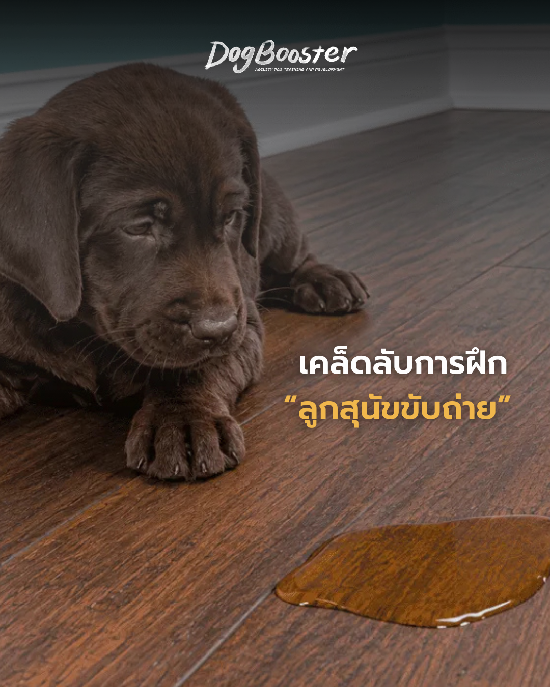

การฝึกขับถ่าย (Housetraining) เป็นหนึ่งในคำถามที่เจ้าของสุนัขมือใหม่ถามถึงมากที่สุด ไม่ว่าจะเป็นลูกสุนัขที่เพิ่งพามาจากผู้เพาะพันธุ์ หรือสุนัขรับเลี้ยงจากศูนย์พักพิง การฝึกขับถ่ายให้ถูกวิธีตั้งแต่วันแรกจะช่วยลดปัญหา “อุบัติเหตุ” ในบ้าน (accidents) และสร้างความสัมพันธ์ที่ดีระหว่างคุณกับสุนัขในระยะยาว บทความนี้รวมเคล็ดลับการฝึกขับถ่ายลูกสุนัขแบบครบวงจร ที่เน้นการเสริมแรงเชิงบวก (positive reinforcement) มากกว่าการ “บังคับ” หรือ “ทำโทษ”
ก่อนพาลูกสุนัขกลับบ้าน ควรปรึกษาผู้เพาะพันธุ์ (breeder) หรือเจ้าของศูนย์พักพิงที่รับเลี้ยง เพื่อจดบันทึกกิจวัตรปกติของลูกสุนัข ทั้งเรื่องการให้อาหารและการขับถ่าย หากรับเลี้ยงสุนัขจร (rescue) ควรพยายามหาข้อมูลให้ได้มากที่สุดเท่าที่จะทำได้ เมื่อถึงบ้านแล้ว ให้ใช้เวลาสักสองสามวันในการค่อยๆ ปรับตารางเวลานั้นให้เหมาะกับตารางเวลาของเจ้าของ
รูปแบบที่คาดเดาได้ (predictable patterns) คือหัวใจสำคัญของการฝึกขับถ่ายลูกสุนัข การคาดการณ์ล่วงหน้าถึงความต้องการขับถ่ายของลูกสุนัขจะช่วยป้องกันอุบัติเหตุในบ้านได้อย่างมีประสิทธิภาพ โดยทั่วไปลูกสุนัขส่วนใหญ่จะต้องออกไปขับถ่ายในช่วงเวลาต่อไปนี้:
นอกจากนี้ ควรจำกัดการดื่มน้ำ 2 ชั่วโมงก่อนเข้านอน เพื่อหลีกเลี่ยงการต้องลุกจากเตียงกลางดึก เพราะลูกสุนัขกระสับกระส่าย และที่สำคัญคือ เจ้าของควรเรียนรู้ว่าอะไรคือ “ปกติ” สำหรับลูกสุนัขของตัวเอง เพราะพฤติกรรมการขับถ่ายของสุนัขแต่ละตัวอาจแตกต่างกัน การสังเกตอย่างสม่ำเสมอจะช่วยให้เจ้าของรู้ทัน หากมีความผิดปกติที่อาจเกี่ยวข้องกับสุขภาพ
หนึ่งในเทคนิคที่ทรงพลังที่สุดของการฝึกขับถ่ายลูกสุนัขคือ การฝึกให้ขับถ่ายขณะจูงสายจูง (potty on leash) ในช่วง 5-6 เดือนแรกของชีวิต ควรพาลูกสุนัขออกไปฉี่หรืออึขณะที่ยังจูงสายจูงอยู่เสมอ วิธีนี้ไม่เพียงช่วยกระตุ้นให้ลูกสุนัขเลือกใช้พื้นที่เฉพาะที่เจ้าของกำหนดไว้เท่านั้น แต่ยังสอนให้สุนัขรู้ว่าการขับถ่ายขณะจูงสายจูงโดยมีเจ้าของอยู่ใกล้ๆ เป็นเรื่องปกติและเป็นเรื่องที่ดี
ข้อดีของการฝึกขับถ่ายขณะจูงสายจูงจะเห็นผลชัดเจนเมื่อสุนัขโตขึ้น เพราะเจ้าของจะไม่ต้องเผชิญปัญหาสุนัขที่ไม่ยอมขับถ่ายขณะจูงสายจูงเวลาต้องเดินทางไปที่อื่น เช่น งานแข่งขัน หรือโรงแรมที่ไม่มีสนามหญ้าให้ปล่อยสุนัขวิ่งอิสระ
การฝึกให้ลูกสุนัขนอนหลับตลอดคืนเป็นอีกหนึ่งขั้นตอนสำคัญของ housetraining เทคนิคที่ได้ผลคือทำให้ทุกครั้งที่ลูกสุนัขปลุกเจ้าของกลางดึก เป็นเหตุการณ์ที่ไม่น่าตื่นเต้นที่สุดเท่าที่จะทำได้ (low-key) เช่น การให้ลูกสุนัขนอนในกรง (crate) ใกล้เตียง ไม่พูดคุยหรือเล่นด้วยระหว่างพาออกไปขับถ่ายกลางดึก และไม่ให้เดินด้วยตัวเองเพื่อไม่ให้เป็นการเสริมแรง (reinforcement) ที่จะทำให้ลูกสุนัขอยากปลุกเจ้าของบ่อยๆ
โดยทั่วไปลูกสุนัขส่วนใหญ่จะเรียนรู้พื้นฐานเรื่องกระเพาะปัสสาวะ (bladder basics) และนอนหลับตลอดคืนได้ ภายในหนึ่งถึงสองสัปดาห์ หากยังไม่เป็นเช่นนั้น แนะนำให้ทำตารางบันทึกเวลาที่ลูกสุนัขฉี่หรืออึ เพื่อช่วยคาดการณ์เหตุการณ์ในอนาคต
การสอนคำสั่งกระตุ้น (cue) เป็นเทคนิคที่ช่วยให้เจ้าของสามารถสั่งให้สุนัขขับถ่ายได้ตามต้องการ วิธีทำคือพาลูกสุนัขจูงสายจูงไปยังจุดที่ต้องการให้ใช้เป็นประจำ เลือกคำหรือวลีที่จะใช้เป็นคำกระตุ้น เช่น “potty” “hurry up” หรือ “do your business” รอจนกว่าลูกสุนัขจะเริ่มขับถ่าย แล้วค่อยๆ พูดคำกระตุ้นนั้นซ้ำๆ เบาๆ ในช่วงสองสัปดาห์แรกอาจให้ขนมชิ้นเล็กๆ (treat) และเวลาเล่นเป็นรางวัลตามหลังทุกครั้งที่ทำสำเร็จ
สุนัขบางตัวชอบขับถ่ายในระยะไกลจากเจ้าของ หรือเลือกหญ้าสูงๆ เป็นพิเศษ แนะนำให้ฝึกตั้งแต่วันแรกที่ลูกสุนัขมาถึงบ้าน โดยจูงสายจูงทุกครั้งที่พาออกไปข้างนอก เพื่อให้สุนัขเรียนรู้ว่าสามารถขับถ่ายขณะจูงสายจูง โดยมีเจ้าของอยู่ใกล้ๆ บนพื้นผิวใดก็ได้ที่สะดวก ไม่จำเป็นต้องรอสถานที่หรือพื้นผิวเฉพาะเจาะจง
การฝึกขับถ่ายลูกสุนัขอย่างถูกวิธีตั้งแต่เนิ่นๆ จะช่วยลดความหงุดหงิดจากปัญหาสุนัขที่มี “อุบัติเหตุ” ในบ้าน หรือไม่ยอมขับถ่ายขณะจูงสายจูงในอนาคต การทำความเข้าใจตารางการขับถ่ายและรู้ว่าอะไรคือ “ปกติ” สำหรับสุนัขของตัวเอง จะช่วยให้เจ้าของสังเกตเห็นความผิดปกติที่อาจสำคัญต่อสุขภาพของสุนัขได้เร็วขึ้น การลงทุนความพยายามในการฝึกขับถ่ายวันนี้ จะนำมาซึ่งความสุขและความสัมพันธ์ที่ดีในชีวิตร่วมกับสุนัขไปอีกนาน
ควรเริ่มฝึกขับถ่ายลูกสุนัขทันทีที่พามาถึงบ้านใหม่ ไม่ว่าลูกสุนัขจะอายุเท่าไหร่ก็ตาม ยิ่งเริ่มเร็วยิ่งสร้างนิสัยที่ดีได้ง่าย
โดยทั่วไปลูกสุนัขส่วนใหญ่จะเรียนรู้พื้นฐานเรื่องกระเพาะปัสสาวะและนอนหลับตลอดคืนได้ภายในหนึ่งถึงสองสัปดาห์ แต่ระยะเวลาอาจแตกต่างกันไปตามแต่ละตัว
เพื่อให้สุนัขคุ้นเคยกับการขับถ่ายโดยมีเจ้าของอยู่ใกล้ๆ บนพื้นผิวใดก็ได้ ซึ่งจะเป็นประโยชน์มากเมื่อต้องพาสุนัขไปที่อื่น เช่น เดินทาง หรืองานแข่งขัน
สอบถาม / ปรึกษาการเลี้ยงลูกสุนัข